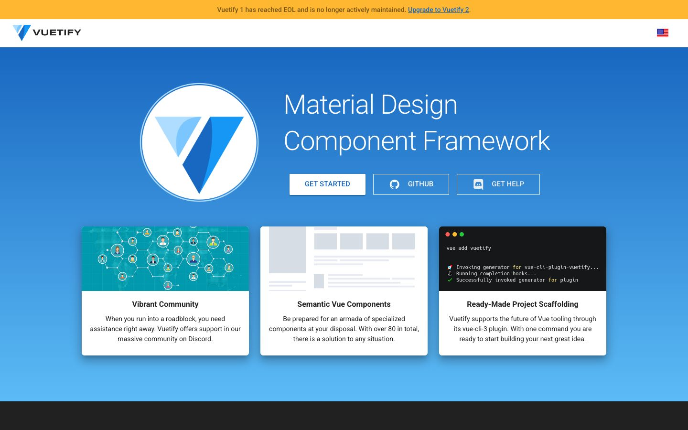

References / Website / 379
Vuetify 1.5 documentation website
The archived home page of Vuetify 1.5, a Material Design component framework for Vue: a blue hero with three raised white cards.
- Source
- Vuetify 1.5 documentation (v15.vuetifyjs.com)
- Creator
- Vuetify
- Style
- Material Design (agent-proposed, not yet reviewed by a person)
- Moods
- Bright, friendly
- Evidence
- Captured with
tools/capture.mjs(headless Chrome, 1440 × 900) on 28 September 2026 and inspected. The screenshot shows the first viewport; the measurement covers up to four screens. - Reviewed
- Rights
- Third-party work, stored with credit for commentary. License: unverified. Rights policy
This is the archived documentation for version 1.5. The current Vuetify site uses Material 3.
Observed
- A yellow strip at the top says that Vuetify 1 has reached end of life. Below it is a white bar with the Vuetify logo.
- The hero is blue, lighter toward the bottom. A large round white logo sits beside the title “Material Design Component Framework” in light Roboto.
- A white GET STARTED button with blue all-capital text stands beside two outlined buttons, GITHUB and GET HELP.
- Three white cards with square corners and large soft shadows show an illustration, a wireframe, and a dark terminal window, each above a bold title and centered text.
Why it belongs
The page measures a shadow on 45 % of its boxes, but with a median blur of 22 px and offset of 12 px, and a gradient share of 0.62 from the hero. It fails three fingerprint metrics for those reasons.
Borrow
Put three raised white cards across the seam between a colored hero and the page below, so that the shadows carry the change of level.
Measured
Machine-extracted by tools/extract-traits.js on . Full measurement.
- Type families
- Roboto (100%)
- Type scale ratio
- 1.07
- Median radius
- 2 px
- Mean chroma
- 0.36
- Palette
- #1867c0 27%
- #ffffff 26%
- #5cbbf6 26%
- #000000 12%
- #ffb731 4%
- #212121 4%
- #bdbdbd 1%
- #eeeeee 0%

